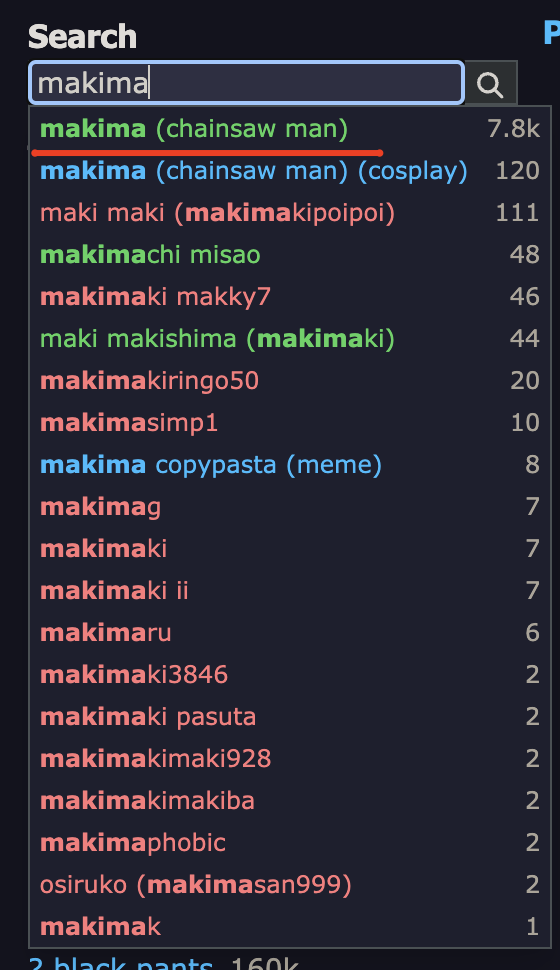

Prompting 101: Basic Principles, Structure, and Why Illustrious is Amazing
All gens start from a prompt. Positive Prompt field, arguably, is the place you're going to spend the most time at. It may look deceptively simple; you just write what you want to see in the image, right? Well, yes, but no. This is where we have to understand how Image Generation models read and process your prompts. I promise it's not as technical as it sounds. I like to think that there are two main ways models understand what you want from them (or, more correctly, two different types of captioning the Training Data models are built upon):
Natural Language: The name pretty much explains it all; you just type what you want to see verbatim. For example, the prompt for a model that uses Natural Language may look like this: a girl stands in a flower field and looks at the mountains, the wind lifts her hair. She wears a backpack. her hair is blonde and long, etc.... It's good in a sense that you can just describe the image in detail; it's especially good when it comes to actions, but, in my personal opinion, the fatal flaw of this approach is that you cannot know the most optimal way to prompt. When there's literally an infinite amount of ways to describe something, how do I do it at least decently? The question may seem silly, but it's actually incredibly frustrating when you get dozens of shitty gens; you know the model is capable of doing great stuff, but when you look into the prompts of these great images, you see that it can easily be 100+ words long. Unless you spend countless hours trying and failing, you won't even get a somewhat good looking image. That's why I prefer the other way to prompt. For example, Midjourney and Pony-Based Stable Diffusion XL models use this method, while stuff like NovelAI's Image Gen supports it partially.
Tag-Based Prompting: It means that there are specific tags the model understands and uses to generate the image. For example, the prompt above will turn into 1girl, looking ahead, blonde hair, long hair, backpack, floating hair, mountain, scenery, landscape, flower field, from behind. It may look less coherent, but unlike with Natural Language, this time I know for sure how to word it, and that the model will understand what I want from it. It opens other opportunities like Artist Tags, Character Tags and such, but we'll talk about that later. Tag-Based prompts are simple to build, easy to understand, and very effective. Not to say that it doesn't have its own drawbacks, but we'll talk about them later. Almost any Image Generation model supports it at some capacity (for the simple reason that these tags are, in fact, words), but Illustrious-XL v0.1 and NoobAI based models work exclusively with tags, while NovelAI prefers them but still works with Natural Language. For the sake of this guide (and things I actually know myself), we'll be talking only about Tag-Based Prompting.
UPD: So, Illustrious 1.0+ now supports some amount of Natural Language. It is pretty cool, but, in my experience, you can't rely exclusively on natural language; I see it as: you prompt what you can in tags, and then try to get details with Natural Language if you can't get them with tags. I'll go in more detail in Illustrious 1.0 section below.
Why Illustrious?
First, let's understand what Illustrious is. Illustrious (or, more specifically, either Illustrious 0.1/1.0/1.1/2.0) is a base Stable Diffusion XL model. Base Model, in my understanding, is a model that's trained right upon the original (or foundational) model, Stable Diffusion XL in this case. Most of modern models you see on popular online image generation services or Civitai are some form (or merge; or finetune) of Illustrious nowadays. Their specific is in Tag-Based prompting, while foundational SDXL models and Pony models before it were prompted exclusively in Natural Language.
There are quite a few Image Generation options out there. For the sake of this guide, I won't touch on NovelAI, Midjourney, Dalle, and Stable Diffusion architectures besides SDXL; I simply don't know much about them. But when it comes to SDXL, there are three main base models that other people build upon: Pony Diffusion XL v6, IllustriousXL v0.1 and NoobAI. The main reason why I love Illustrious is because it's incredibly easy to prompt; you just "build" the image with tags, and usually it just works. From my personal experience, Illustrious also has a much higher image quality than Pony-based models; sometimes, Illustrious-based models just excel in stuff like small details and backgrounds and more important stuff like prompt adherence, image composition, stylization, and character adherence. Like literally anything out there, it takes quite a bit of learning, trial and error, research, and even more learning, but we'll go through the most important aspects of generating images in this guide. Let's get to it, I guess.
Small addendum about NoobAI. While it's technically different from Illustrious, it's prompted the same way. As long as the NoobAI model you're downloading is eps-pred (sometimes also called e-pred), you won't see any difference from Illustrious models, at least in prompting and most technicalities. You should generally avoid v-pred models, they suffer from contrast and color issues, and may work badly with LoRAs.
"Where do I get the tags???"
Okay, actually, before we start, this is maybe the most important thing I need to address - the place where you'll get the info about tags. Illustrious models use Training Data obtained from Danbooru, so they're captioned in Booru tags. Danbooru, bless them, has a page where they list and explain almost every tag on the site: Danbooru Tag Groups Wiki. It is big and a bit complex, and will take a while to get used to, but as I explain further down the process of making a prompt, I will be linking different Tag Group pages that list all the tags I'll be using.
Brackets and Underscores
While we're here, let me talk about underscores and brackets. On the Danbooru site, to search for tags that consist of multiple words, you have to use underscores, like looking_at_viewer. In Stable Diffusion, you do not use them, so the tag above will turn into a simple looking at viewer. Brackets are a bit trickier; let's look at the tag that Danbooru recognises as 2000s_(style). In Stable Diffusion, brackets are used exclusively for Weight Manipulation (that we will talk about later), so it will not recognise the tag. To fix this, every bracket must be prefixed with a \, so the tag above will look like 2000s \(style\) in your Prompt field.
Basic Prompting: Tag Types and your First Prompt
Step 1: People Tags
Let's start with the very beginning of a prompting process. For the sake of simplicity and, to be fair, the needs of the most people getting into image gen, we'll be doing character gens. The very first thing your prompt must have is something I call People Tags. These are essential and must be at the very beginning of your prompt. They are self-explanatory, and while there are quite a few of them, you won't ever need the most. Here are People Tags that will be enough for 100% of your gens:
1boy, 2boys, 3boys, 1girl, 2girls, 3girls, multiple boys, multiple girls, no people
More Group Tags
Let's start making our prompt. So far it's:
Positive Prompt: 1girl,
Step 2: Character Tags
Now, let's think about how we want our 1girl to look like. Actually, it's not strictly necessary to define the character at all: the model will come up with something on it's own. It can be useful if the exact look of the character is not important to you, for example, when you're just testing styles or generating a scenery, cases where you want to keep your Prompt Complexity low (we'll talk more about it later). Most of the time, of course, you want to define your character. The simplest way possible is by just using a Character Tag — an existing character from some media. There're multiple lists of characters from different Media on Tag Groups Wiki under "Copyrights, artists, projects and media", but the easiest way to find them is by just searching the character or media you want. If you're making a completely original character, you should skip this step entirely. For example, I'll pick a character whose tag is called makima_(chainsaw_man). In prompt, it will look like makima \(chainsaw man\), so now we have:
Positive Prompt: 1girl, makima \(chainsaw man\),

Really, you should always check Booru for a tag you're going to use. Takes a few seconds, but spares trouble from using a wrong tag. Also make sure to check what a tag actually means.solo focus, for example, mandates the image to be a multiple character image; it will mess up solo gens.
Step 3: Action Tags
Now, let's make our prompt more alive. The next part of making a prompt is defining character's actions and position. I call it Action Tags. They are mostly up to your creativity: you think of what you want your character to do, look up the tags and enter them. You can find almost every Action Tag on Posture Tags Wiki, but they're not exhaustive; feel free to try different variations of words in Search to see if the tag not documented on Postures Wiki exists. For example, there are Holding Tags, Looking At tags and more on Eye Tags Wiki, a lot of actions on Verbs and Gerunds Wiki, also 'On' Tags and probably much more. Anyway, let's get back to our prompt. I'll be using looking at viewer, sitting, crossed legs, on chair, head tilt,. It makes our prompt:
Positive Prompt: 1girl, makima \(chainsaw man\), looking at viewer, sitting, crossed legs, on chair, head tilt,
Step 4: Appearance Tags
This is where we define the way our character looks, like Eye Tags, Attire Tags, Body Tags, Face Tags, etc. Again, the easiest way to find them is to just use Search. Want Animal Ears? You just search it and find the correct name for the tag. I guess the most important thing here is, the less, the better, especially if you're using a Character Tag. If you want to get this non-original character 1:1 in their original attire, you can skip this step entirely 90% of the time, just like I'll do it here. I have some gens with defined appearances below, so don't worry. We still have:
Positive Prompt: 1girl, makima \(chainsaw man\), looking at viewer, sitting, crossed legs, on chair, head tilt,
Step 5: Background Tags
Location Tags Wiki is your best friend here. Most of the time you'd want to specify separately, whether it's indoors or outdoors. For Simple Backgrounds, make sure that your negative prompt doesn't have simple background in it, here's the Backgrounds Wiki. For this prompt, I'll use indoors, office.
Positive Prompt: 1girl, makima \(chainsaw man\), looking at viewer, sitting, crossed legs, on chair, head tilt, indoors, office
Step 6: Image Composition and Style Tags
It's one of the most important Tag Categories. Most Composition Tags are explained in Image Composition Wiki; specifically in View Angle, Focus Tags and Framing of the Body. Style tags are used fairly rarely, but you can find them in Style Parodies Wiki. Please note that Composition tags are essential (in most cases. Note that you must not use View Angle tags in Multiple Character where both character are in focus). Without them, your gen might suffer a huge loss in quality. In my prompt, I'll use cowboy shot.
Positive Prompt: 1girl, makima \(chainsaw man\), looking at viewer, sitting, crossed legs, on chair, head tilt, indoors, office, cowboy shot,
Step 7: Artist Tags
This is maybe the hardest part of the prompt that I'll explain separately later. I won't be using them here. Okay, I never actually made this section, so a couple of words about Artist Tags. First, you can see all the different artists here. In general, an artist should have at least 100 images for their Artist Tag to work well; I recommend aiming at artists with 500+ images. Check LoRAs section; Artist are similar in how you should use them.
Step X: Quality Tags
This is something you'll most likely have to setup once and never change again. I recommend the following quality tags:
Positive: {prompt},masterpiece,best quality,amazing quality
Negative: {prompt},bad quality,worst quality,worst detail,sketch,censor,
Depending on what you get, you may also want to negative signature, watermark, monochrome, l0l1, child, censor, multiple view, etc, but it's best to start expanding on negatives only when you get something you don't want in the gen.
Result
We finally finished going through the prompting process, and in the end we've got:
Positive Prompt: 1girl, makima \(chainsaw man\), looking at viewer, sitting, crossed legs, on chair, head tilt, indoors, office, cowboy shot, masterpiece,best quality,amazing quality
Negative Prompt: bad quality,worst quality,worst detail,sketch,censor
Metadata: 1girl, makima (chainsaw man), looking at viewer, sitting, crossed legs, on chair, head tilt, indoors, office, cowboy shot, masterpiece,best quality,amazing quality, Negative prompt: bad quality,worst quality,worst detail,sketch,censor Steps: 28, Sampler: DPM++ 2M, Schedule type: Karras, CFG scale: 5, Seed: 3473795472, Size: 832x1216, Model hash: 0842c2a1d8, Model: Amanatsu_v11, Denoising strength: 0.39, Clip skip: 2, ADetailer model: face_yolov8n.pt, Hires CFG Scale: 5, Hires upscale: 1.5, Hires steps: 20, Hires upscaler: R-ESRGAN 4x+ Anime6B,